0에서 1까지. 디자인 시스템 구축부터 앱스토어 출시까지.
실제 서비스가 만들어지는 과정을 기록했습니다.
클럽미니쉬는 미니쉬 치과의 초대인(기존 고객)이 지인을 초대하고, 상담 예약부터 리워드 수령까지 하나의 앱에서 처리할 수 있는 멤버십 기반 헬스케어 서비스입니다.
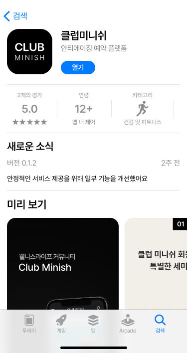
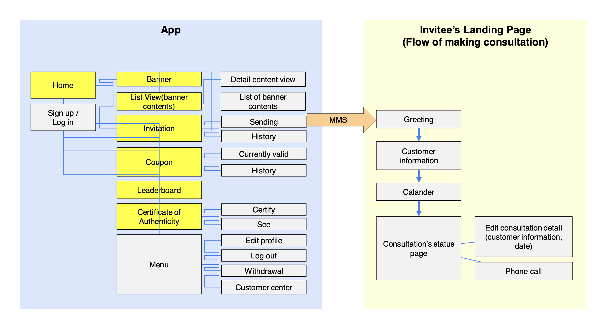
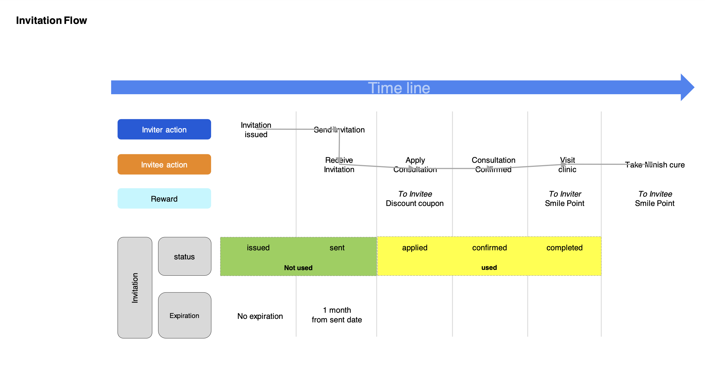
0→1 프로젝트이기 때문에 시각 언어를 처음부터 정의해야 했습니다. 컬러·타이포·간격 시스템을 먼저 확정하고, 이를 기반으로 재사용 가능한 컴포넌트를 구축해 모든 화면 설계에 적용했습니다.
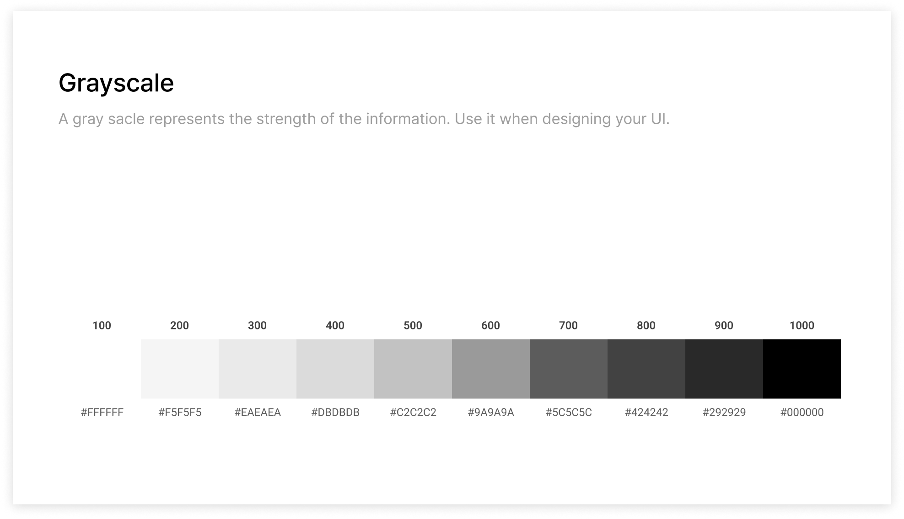

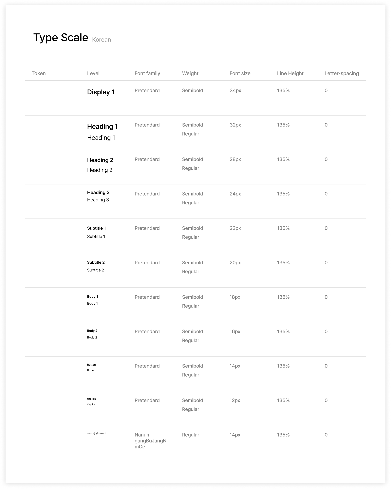
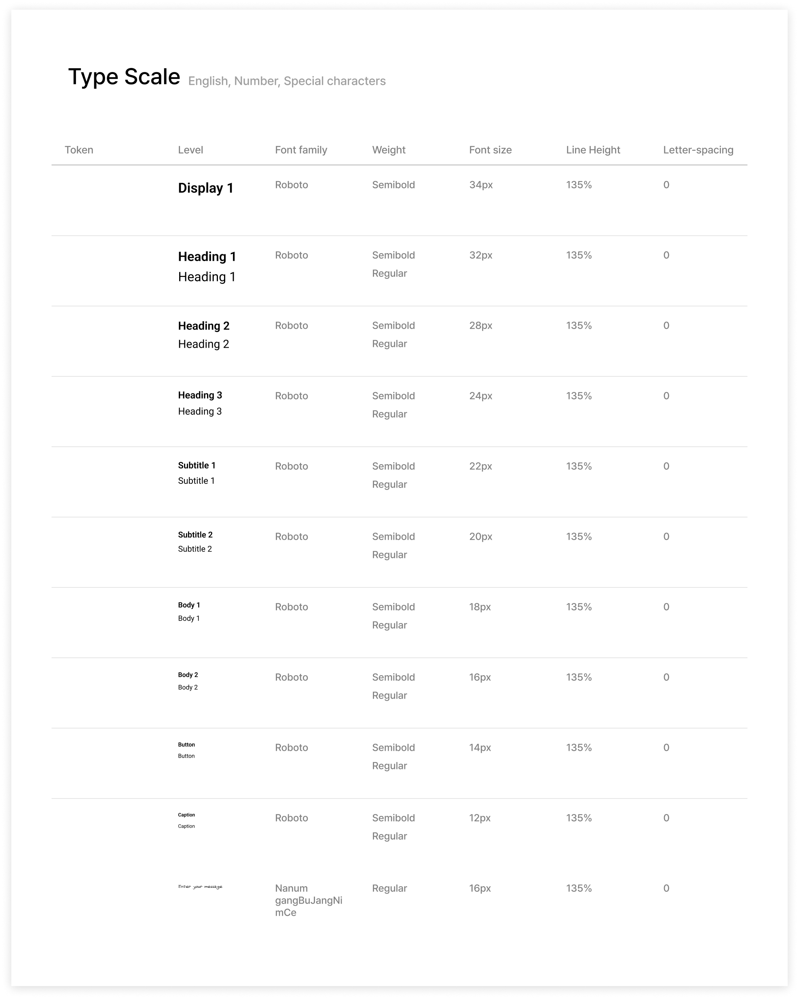
Button · Input · Alert · Toast · Card 등 핵심 컴포넌트를 상태별로 정의했습니다. 각 컴포넌트는 empty · typing · error · complete 상태를 모두 커버해 개발자가 별도 해석 없이 바로 구현할 수 있도록 구성했습니다.
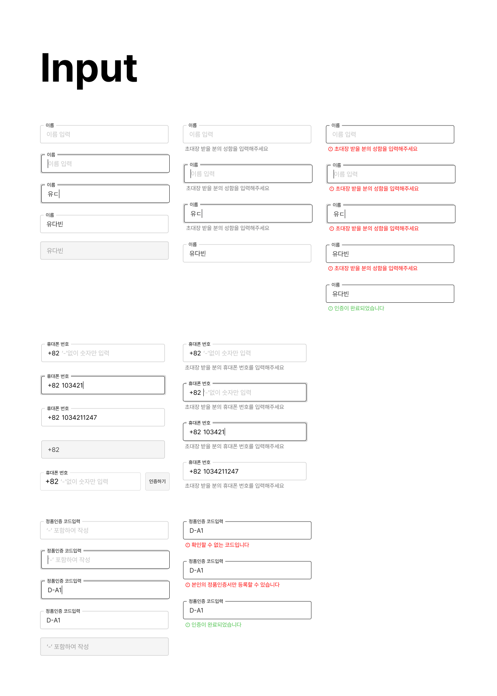
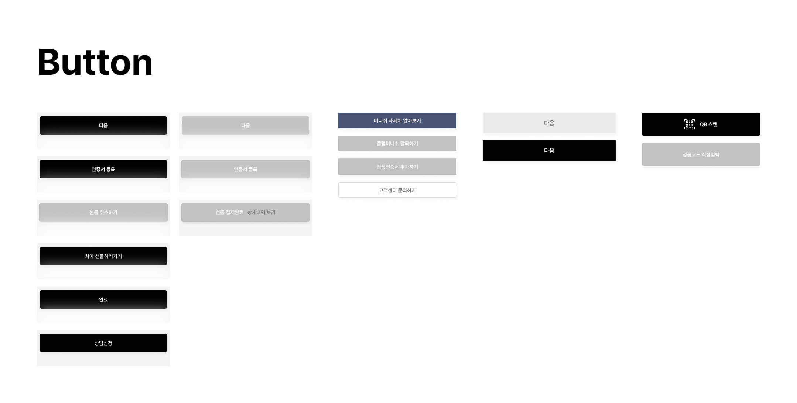
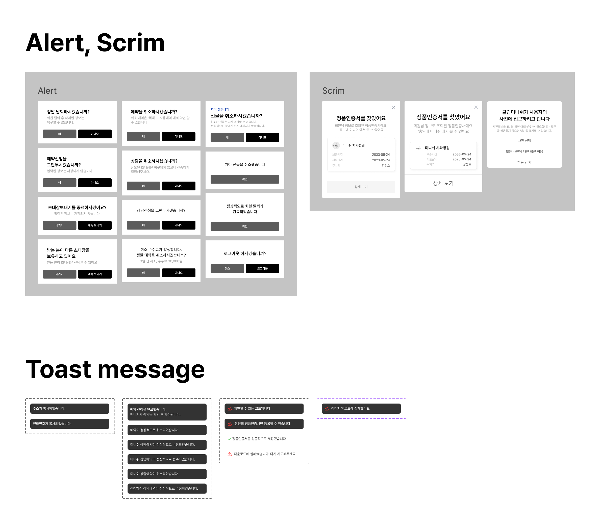
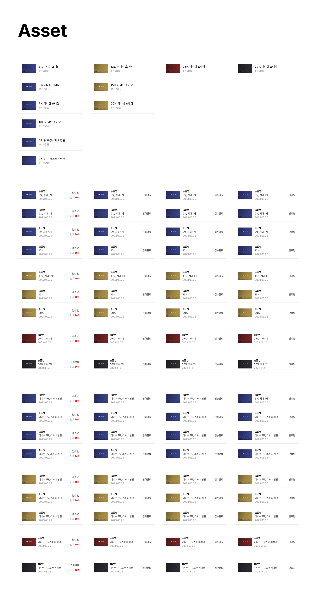
토큰 시스템은 2인 개발팀·MVP1 일정 트레이드오프로 의식적으로 Post-launch 백로그에 등록했습니다.
다음 스프린트에서 의도한 토큰 설계: Color / Spacing / Type 3축, JSON 토큰 + Figma Variables 연동 계획.
Figma Dev Mode를 활용해 별도 스펙 문서 없이 개발자가 Figma에서 직접 수치·상태·인터랙션을 읽을 수 있는 구조를 만들었습니다. 런칭 전 기기별 QA를 직접 진행해 디자인 의도가 구현에 반영됐는지 검수했습니다.


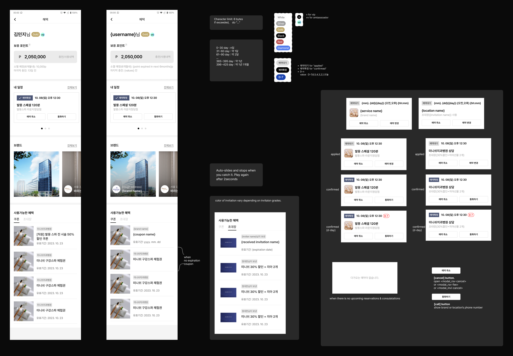
해외 지사 개발팀과 물리적으로 떨어진 환경에서 협업했습니다. 실시간 구두 소통이 제한된 만큼, 디자인 의도를 오해 없이 전달하는 것이 핵심 과제였습니다.
iOS / Android · Web(피초대인) 출시 후 첫 주 실사용 피드백을 직접 수집하고 대응했습니다. 런칭이 끝이 아니라 개선 사이클의 시작이었습니다.
UX 의사결정 근거와 UT 수치는 케이스스터디에서 확인할 수 있습니다.
GA 이벤트를 설계 단계에서 합의하지 못해 라이브 배포 후 단계별 이탈률을 추적하지 못했습니다. 다음 사이클에서는 릴리즈 -2주 시점에 PM·개발팀과 핵심 퍼널 4개를 사전 정의하겠습니다.
Case Study
예약 플로우 재설계 과정과
UX 의사결정의 근거를 담았습니다.